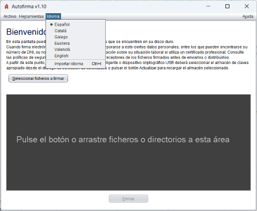

En la pantalla principal de Autofirma, se permite cambiar el idioma de la aplicación mediante el menú "Idioma" situado en la parte superior. Los idiomas disponibles son español, inglés, catalán, gallego, euskera y valenciano.

Una vez seleccionado, se solicitará al usuario reiniciar Autofirma para aplicar los cambios correctamente.
Autofirma también permite al usuario importar un idioma mediante un archivo .zip que contenga los recursos del mismo. Esta opción se puede usar seleccionando la opción "Importar Idioma" dentro del menú "Idioma".